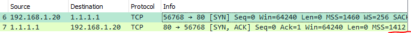

Хотел оптимизировать работу wireguard через vless и столкнулся с непонятным поведением TCP MSS.
- PPPOE на роутере, mtu роутера 1492, mtu пк 1500, на пк http://witch.valdikss.org.ru выдает mtu 1452 (в tcpdump вижу от клиента mss 1460, от сервера 1412).
- pppoe на пк, mtu 1492, http://witch.valdikss.org.ru выдает mtu 1492 (в tcpdump вижу от клиента mss 1452, от сервера 1452)
Мой VPS с mtu 9000 отправляет mss 8960, но до клиента доходит в 1 варианте 1412, во 2 1452. На другом роутере, пк и провайдере вообще приходит mss 1400 от сервера в 1 варианте.
Это можно исправить и получить максимально возможный mss?
MTU - это максимально возможный размер пакета, начиная с ip заголовка. то есть максимальный пейлоад данных уровня L2
MSS - максимально возможная длина полезного блока данных tcp. максимальный пейлоад уровня L4. Разница между MTU и MSS - это размер заголовков ip и tcp.
Минимальный размер ip - 20 байт, tcp - 20 байт. Отсюда и разница 40. Может быть и больше, если в tcp header включены options.
Сколько бы ни было MTU на каком-либо конце, при передаче данных на другой конец выполняется процедура path mtu discovery. С помощью icmp оконечные узлы выявляют минимальный MTU всех узлов на пути пакета. Так что PMTU будет всегда самым меньшим из MTU по пути. Иначе пакет просто не дойдет.
Если вдруг ICMP не ходят, то есть костыль на роутерах. clamp-mss-to-pmtu, который обычно имеется в ip или nftables. Модуль на роутере редактирует mss , выставленный исходным узлом
Вручную можно выявить PMTU, попингав другой конец с разными размерами пакета и флагом DF (dont fragment). Обычно в комаде ping размер устанавливается как размер пейлоада ICMP echo, так что к нему для ipv4 надо прибавить 28 байт (20 ip + 8 icmp). Для 1500 MTU макс пинг будет 1472.
Я походу вообще непонятно написал вопрос, да? Ответа не увидел
http://witch.valdikss.org.ru/ сколько у тебя отображает mtu? Интернет IPOE или PPPOE?
Правильный mtu у меня отображает только на IPOE подключении к инету с mtu 1500. На pppoe интернете с натом через роутер сайт отображает mtu 1452 а не 1492. И так не только у меня
И на мобильном инете мегафона с mtu 1500 сайт отображает mtu 1400
И да он реальный, пинг 1472 без фрагментации проходит, как и 1464 на pppoe
У меня отображает 1500 (ipoe).
Если он отображает что-то другое, значит ему приходят пакеты такого размера. Но почему они приходят - скорее всего из-за PMTU. Где-то режут.
Надо протрейсить весь путь с макс размером и DF
как-то так
traceroute -F cloudflare.com 1500
traceroute на мегафоне проходит c 1500 (на сайте 1400), на pppoe через нат роутера traceroute проходит c 1492 (на сайте 1452)
Ведьма может ошибаться 
Лично я больше верю traceroute
Это очень старый сайт
ipoe на роутере (трассировка и пинг с размером 1500 проходит)
{kind=link}
pppoe на роутере (трассировка и пинг с размером 1492 проходит)

pppoe на компе (трассировка и пинг с размером 1492 проходит)
{kind=link}
мегафон lte через андроид (трассировка и пинг с размером 1500 проходит)
{kind=link}
ответ сервера везде разный (и совпадает с ведьмой), так и должно быть? Мне кажется что правильный ответ только в первом случае, в остальных mss меньше чем должен быть
трассировка с размером 1500 а пинг с размером 1500-28*
Я бы попробовал пинговать не 1.1.1.1, а какой-нибудь хост под своим контролем, где можно сделать дамп.
Чтобы выяснить несколько вещей
- Какой MSS отправляется клиентом (уже видно, что максимальный)
- Какой MSS видит роутер на внутр интерфейсе
- Какой MSS отсылает роутер на внешний интерфейс
- Какой MSS приходит приходит серверу от клиента
- Каким MSS сервер отвечает
- Какой MSS принимает роутер с внешнего
- Какой MSS отсылает роутер на внутр
- Какой MSS приходит клиенту (уже видно, что мелкий)
Надо понять на каком этапе происходит искажение.
Я сделал такой эксперимент.
Поставил на роутере MTU 1400 внешнего интерфейса.
Снял дамп на клиенте, на сервере, на роутере с внешнего интерфейса, на роутере с внутр интерфейса. Результат такой :
Клиент отсылает 1460.
Роутер получает 1460.
Роутер отправляет 1360.
Сервер получает 1360.
Сервер отправляет 1460.
Роутер получает 1460.
Роутер отправляет 1360.
Клиент получает 1360.
Это результат работы клампера мсс в iptables
Цель - узнать кто зарезает MSS. То ли клампер в вашем случае плохо работает, то ли на пути какие-то мидлбоксы что-то чудят
А точно стоит гнать udp через tcp ?
Там же непонятно как udp фреймы будут упакованы в tcp.
1:1 пакет в пакет может и не быть.
Могут 10 мелких udp упаковать в 1 отсыл по tcp, который размажется на 2 tcp пакета. И в чем тогда смысл такой тщательной оптимизации по mss ?
Максимальный mtu 1480 надо ставить на pppoe и без вариантов, а то сайты не всегда будут открываться если поставить 1492
Хочешь больше mtu, меняй провайдера )
Если у вас проблема с mtu 1492 значит вы или провайдер что-то сломали
Вы знаете как работает mtu ? Думаю если бы знал, тогда бы не спрашивал. Я сказал как нужно и нет чтоб сказать спасибо, ещё и крайним меня делаешь )) Вот так вот, помогай людям, я в шоке. Учить почему так, я не собираюсь, кому надо, тот сам поймёт
спасибо за что? сообщение не по теме и никак не помогает
Тогда удачи с 1492 )
команды для теста выше есть, удачи в определении проблемы